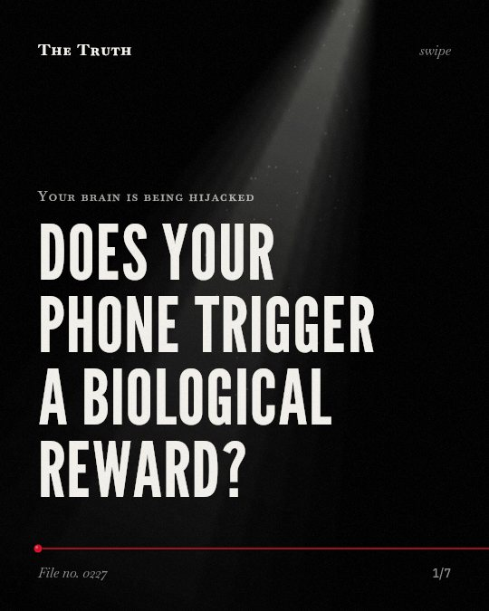

Your brain is being hijacked
Does your phone trigger a biological reward?

Algorithms deepen the activation of your brain's reward centers.
Research shows these systems are designed to maximize your screen time. These findings are currently supported by evidence.
Established. Several studies combined, or official data. The evidence is mixed.
What the research found
The brain systems that are sensitized by addiction do not mediate the pleasurable effects of drugs, but instead mediate a subcomponent of reward called incentive salience.
“The brain systems that are sensitized do not mediate the pleasurable or euphoric effects of drugs (drug "liking"), but instead they mediate a subcomponent of reward we have termed incentive salience (drug "wanting").”
Study, 2000. Robinson & Berridge, Addiction.
Digital interruptions cause significant drops in left-to-right inter-brain neural synchrony during parent-child interactions.
“Digital interruptions ("technoference") cause significant drops in left-to-right inter-brain neural synchrony during parent-child interactions.”
Systematic review, 2026. Singh et al., Inter Continental Journal of Pharmaceutical Investigations and Research. This shows a link, not a cause.
Algorithms designed to maximize screen time deepen the activation of the brain's reward centers.
“These adaptive algorithms are designed to maximize screen time, thereby deepening the activation of the brain's reward centers.”
Review, 2025. De et al., Cureus.
The brain systems involved in incentive motivation and reward are changed by addiction, becoming hypersensitive to drug-associated stimuli.
“The brain systems that are changed include those normally involved in the process of incentive motivation and reward. ... The critical neuroadaptations for addiction render these brain reward systems hypersensitive ("sensitized") to drugs and drug-associated stimuli.”
Study, 2000. Robinson & Berridge, Addiction.
Problematic social media use is linked to physical activity avoidance and sleep loss.
“PSMU drives nomophobia, triggering physical activity avoidance and sleep loss.”
Systematic review, 2026. Singh et al., Inter Continental Journal of Pharmaceutical Investigations and Research.
Problematic social media use is linked to structural and functional characteristics of the brain and autonomic nervous system.
“we discussed neurobiological risk factors for Internet addiction with a focus on current evidence on the association between PSMU and structural/ functional characteristics of the brain and autonomic nervous system”
Review, 2023. Tereshchenko, World Journal of Psychiatry.
Addiction changes how your brain processes desire.
The systems involved in incentive motivation become hypersensitive. They mediate a subcomponent of reward called incentive salience. This is linked to 'wanting' rather than 'liking.'
Your habits may be altering your neural structure.
Problematic social media use is linked to structural and functional characteristics of the brain. That may be why your behavior feels difficult to change.
This part is our reading of the evidence, not a finding.
You check your phone in a quiet room.
The screen glows in the dark. You feel a pull to see what is new. You put the phone down but reach for it again seconds later.
The honest summary
The evidence confirms that social media algorithms target reward centers and that addiction involves neural sensitization to 'wanting' rather than 'liking,' but specific neuroimaging for social media remains limited.
There is practically no research on neuropeptide and genetic associations for problematic social media use to date.
Who is controlling your focus?
Sources
- Sergey Yu Tereshchenko (2023). Neurobiological risk factors for problematic social media use as a specific form of Internet addiction: A narrative review. World Journal of Psychiatry. Review, cited 49 times.
- Debasmita De, Mazen El Jamal, Eda Aydemir et al. (2025). Social Media Algorithms and Teen Addiction: Neurophysiological Impact and Ethical Considerations. Cureus. Review, cited 54 times.
- Vasu Singh, Nisha Gupta, Mudita Sawant et al. (2026). Impact of Social Media Addiction on Physical Fitness and Academic Performance in Teenagers: A Systematic review. Inter Continental Journal of Pharmaceutical Investigations and Research. Systematic review.
- Terry E. Robinson, Kent C. Berridge (2000). The psychology and neurobiology of addiction: an incentive–sensitization view. Addiction. Study, cited 1,509 times.
Also read for this file, not quoted
This file was researched and drafted by software, then checked by rules a model cannot talk its way around: each quote above was matched word for word against the paper, and every number had to appear in it. How files are made.